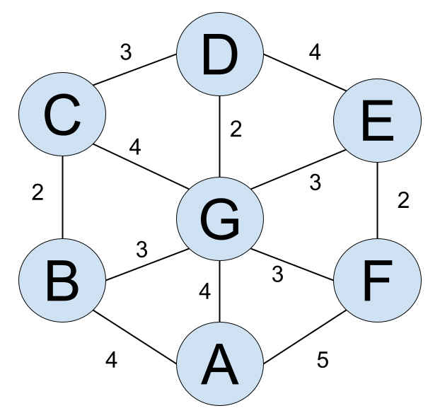

20秒に一度自動更新されます。
20:40 Q8訂正
注意
文字列(16進数)
1点
を計算し,16進法で答えよ。
なお,先頭の文字を0にせず,アルファベットは大文字を用いること。
※は数値Nが2進数であることを表す。
1点
(すなわち,3391641の3乗根) を10進法の小数で表したとき,その小数第一位を四捨五入した値を求めよ。
1点
アル氏は遊園地Agolrithmに来ている。遊園地Agolrithmにはアトラクションが図のように7つ存在し, 隣接するアトラクションとの間に道があって,その道のみを通って別のアトラクションに行くことができる。各アトラクション間の移動にかかる時間 (以下,移動時間)は図の通りである。いま,アル氏はアトラクションAにいる。アトラクションB~Gをちょうど一回ずつ 回ってアトラクションAに戻るとき,移動時間の合計の最小値を求めよ。
2点
を1000で割った余りを求めよ。なお,0以上1000未満の整数で答えること。
2点
猫のゴリズム君が全8段の階段を上る。
ただし,ゴリズム君は一回の動作で 1段または2段または3段 の階段を上ることができる。
ただし,以下の動作はできない。
最初ゴリズム君が0段目にいるとき,8段の階段を上り切る動作の方法は何通りあるか。ただし,通過する段があってもよい。
3点
を41で割った余りを求めよ。(0以上41未満の整数で答えること。)
なお,以下の定理を参考にすること。
フェルマーの小定理:
aが整数,pが素数で,a,pが互いに素であるとき,
3点
正の整数nの正の約数の総和をf(n)とする。
f(2025)+f(2・2025)+f(3・2025)+・・・+f(9・2025)+f(10・2025)
の値を求めよ。
3点
アル氏は,自分以外のA~Hの8人のうち0人以上8人以下と友達になろうとしている。
8人それぞれがスキルと負荷値をもっており,
それらは以下の表のようになっている。
| 名前 | スキル | 負荷値 |
|---|---|---|
| A | {b,e,f,h} | 5 |
| B | {b} | 4 |
| C | {} ※空集合 | -2 |
| D | {c,g} | 5 |
| E | {d} | 3 |
| F | {a,f,h} | 3 |
| G | {c} | -1 |
| H | {e,g} | 4 |
アル氏は,最初A~Hがもつスキルのいずれももっておらず,ある人と友達になると,その人のもつスキルすべてを習得ことができる。 ただし,負荷値の合計が5以上になるように友達を作ることはできない。
アル氏が習得するスキル数が最大となるように友達をつくるとき,友達になる人の選び方を1つ求めよ。
ただし,アルファベットの昇順に,空白やカンマ等で区切らずにつなげて答えよ。
(例) ABCD
20:40 Q8訂正